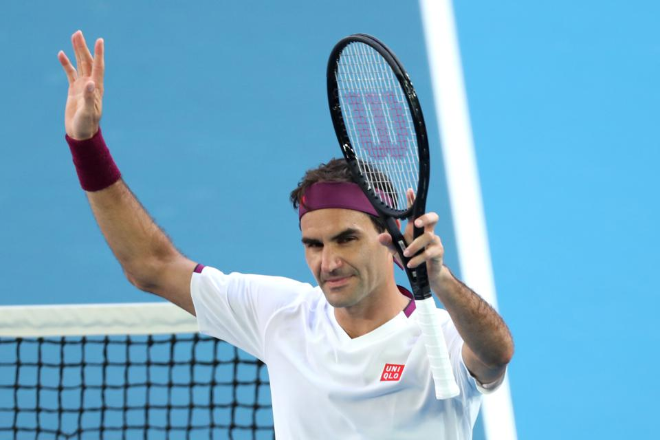

More Facts About Roger
- He speaks Swiss, German, French, and English fluently
- His good luck charm is Tweety bird
- Until he was 16, Federer was a vegetarian
- He says that Italian is his favorite type of food
- He founded the Roger Federer foundation which supports sports and education to children in South Africa
